Позвонить: (4842) 75-75-05
Написать сообщение: m-40@inbox.ru
- Главная
- О компании
- Контакты
- Редукторы и мотор-редукторы
- Колеса крановые
- Блоки полиспаста
- Шкивы тормозные
- Муфты
- Крюки и крюковые подвески
- Грузовые барабаны
- Шлицевые детали
- Конические шестерни
- Цилиндрические шестерни
- Запасные части для козловых кранов
- Запасные части для портальных кранов
- Запасные части для башенных кранов
- Техническая информация
- Правовая информация
Редукторы цилиндрические трехступенчатые → Редуктор Ц3У 315Н
- Главная
- О компании
- Контакты
- Редукторы и мотор-редукторы
- Колеса крановые
- Блоки полиспаста
- Шкивы тормозные
- Муфты
- Крюки и крюковые подвески
- Грузовые барабаны
- Конические шестерни
- Цилиндрические шестерни
- Шлицевые детали
- Запасные части для козловых кранов
- Запасные части для портальных кранов
- Запасные части для башенных кранов
- Техническая информация
- Правовая информация
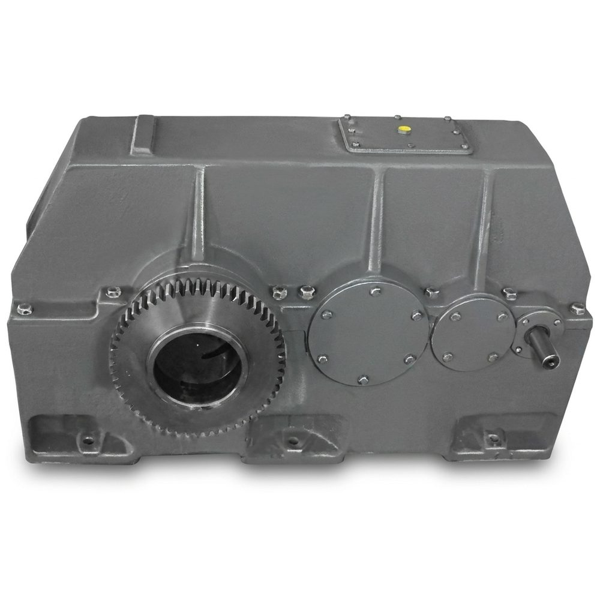
Редукторы цилиндрические горизонтальные трехступенчатые с зацеплением Новикова, общемашиностроительного применения типоразмера Ц3У-315Н,
предназначены для увеличения крутящего момента и уменьшения частоты вращения.
Условное обозначение: Ц3У-315Н-40-13ЦУ1
Редуктор цилиндрический трехступенчатый с межосевым расстоянием выходной ступени 315 мм, с зацеплением Новикова передаточным числом 40, вариантом сборки 13,
цилиндрическим концом выходного вала, климатического исполнения У категории размещения 1.
Технические характеристики редуктора Ц3У 315Н
Номинальное передаточное отношение
31,5; 40; 50; 63; 80; 100; 125; 160; 200
Номинальный крутящий момент на тихоходном валу, Н·м
8200..9000
Номинальная передаваемая мощность, кВт
27..5,6
Частота вращения входного вала, мин-1
1500..500
Масса, кг
585
Примечания:
- При работе в реверсивном режиме, т.е. при периодическом изменении направлений нагрузки
номинальные крутящие моменты на выходном валу, указанные в таблице, должны быть снижены на 30 %;
- Редукторы допускают кратковременные перегрузки, возникающие при пусках и остановках
двигателя, в 2 раза превышающие номинальные нагрузки, если число циклов нагружения быстроходного вала за время действия этих перегрузок
не превысит 3·106 в течение всего срока службы редуктора;
- Номинальная радиальная нагрузка на выходном валу для вариантов сборки 13, 23, 33 и
на входном валу – для вариантов сборки 31, 32, 33 должна быть уменьшена в два раза.
Условия применения редукторов:
- Нагрузка постоянная и переменная, одного направления и реверсивная;
- Работа постоянная или с периодическими остановками;
- Вращение валов в любую сторону;
- Частота вращения входного вала не должна превышать 1800 об/мин;
- Атмосфера типов I и II по ГОСТ 15150-69 при запыленности воздуха не более 10 мг/м3;
- Климатические исполнения У, Т (для категории размещения 1…3) и климатические исполнения УХЛ и О
(для категорий размещения 4) по ГОСТ 15150-69.
Редуктор цилиндрический трехступенчатый с межосевым расстоянием выходной ступени 315 мм, с зацеплением Новикова передаточным числом 40, вариантом сборки 13,
цилиндрическим концом выходного вала, климатического исполнения У категории размещения 1.
Технические характеристики редуктора Ц3У 315Н
| Номинальное передаточное отношение | 31,5; 40; 50; 63; 80; 100; 125; 160; 200 |
| Номинальный крутящий момент на тихоходном валу, Н·м | 8200..9000 |
| Номинальная передаваемая мощность, кВт | 27..5,6 |
| Частота вращения входного вала, мин-1 | 1500..500 |
| Масса, кг | 585 |
Примечания:
- При работе в реверсивном режиме, т.е. при периодическом изменении направлений нагрузки
номинальные крутящие моменты на выходном валу, указанные в таблице, должны быть снижены на 30 %;
- Редукторы допускают кратковременные перегрузки, возникающие при пусках и остановках
двигателя, в 2 раза превышающие номинальные нагрузки, если число циклов нагружения быстроходного вала за время действия этих перегрузок
не превысит 3·106 в течение всего срока службы редуктора;
- Номинальная радиальная нагрузка на выходном валу для вариантов сборки 13, 23, 33 и
на входном валу – для вариантов сборки 31, 32, 33 должна быть уменьшена в два раза.
Условия применения редукторов:
- Нагрузка постоянная и переменная, одного направления и реверсивная;
- Работа постоянная или с периодическими остановками;
- Вращение валов в любую сторону;
- Частота вращения входного вала не должна превышать 1800 об/мин;
- Атмосфера типов I и II по ГОСТ 15150-69 при запыленности воздуха не более 10 мг/м3;
- Климатические исполнения У, Т (для категории размещения 1…3) и климатические исполнения УХЛ и О
(для категорий размещения 4) по ГОСТ 15150-69.
- При работе в реверсивном режиме, т.е. при периодическом изменении направлений нагрузки номинальные крутящие моменты на выходном валу, указанные в таблице, должны быть снижены на 30 %;
- Редукторы допускают кратковременные перегрузки, возникающие при пусках и остановках двигателя, в 2 раза превышающие номинальные нагрузки, если число циклов нагружения быстроходного вала за время действия этих перегрузок не превысит 3·106 в течение всего срока службы редуктора;
- Номинальная радиальная нагрузка на выходном валу для вариантов сборки 13, 23, 33 и на входном валу – для вариантов сборки 31, 32, 33 должна быть уменьшена в два раза.
Условия применения редукторов:
- Нагрузка постоянная и переменная, одного направления и реверсивная;
- Работа постоянная или с периодическими остановками;
- Вращение валов в любую сторону;
- Частота вращения входного вала не должна превышать 1800 об/мин;
- Атмосфера типов I и II по ГОСТ 15150-69 при запыленности воздуха не более 10 мг/м3;
- Климатические исполнения У, Т (для категории размещения 1…3) и климатические исполнения УХЛ и О
(для категорий размещения 4) по ГОСТ 15150-69.
- Нагрузка постоянная и переменная, одного направления и реверсивная;
- Работа постоянная или с периодическими остановками;
- Вращение валов в любую сторону;
- Частота вращения входного вала не должна превышать 1800 об/мин;
- Атмосфера типов I и II по ГОСТ 15150-69 при запыленности воздуха не более 10 мг/м3;
- Климатические исполнения У, Т (для категории размещения 1…3) и климатические исполнения УХЛ и О (для категорий размещения 4) по ГОСТ 15150-69.
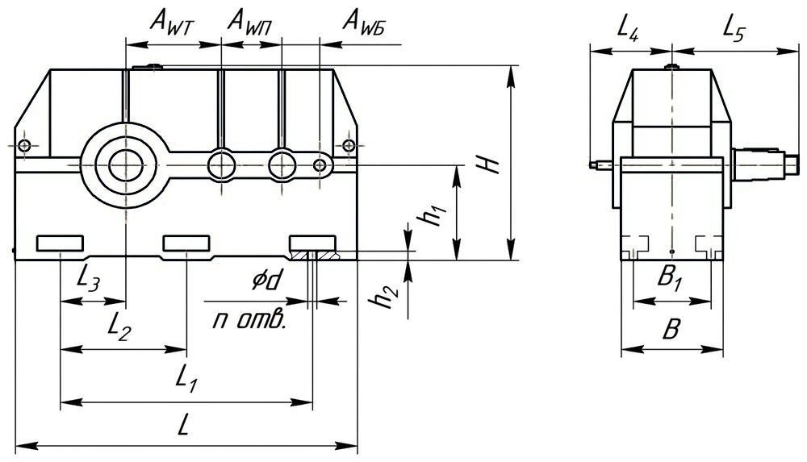
Габаритные и присоединительные размеры редуктора Ц3У 315Н
| AWБ | AWП | AWT | L | L1 | L2 | L3 | L4 | L5 | B | B1 | H | h1 | h2 | d | n |
| 125 | 200 | 315 | 1130 | 830 | 415 | 215 | 270 | 420 | 340 | 260 | 685 | 335 | 35 | 28 | 6 |
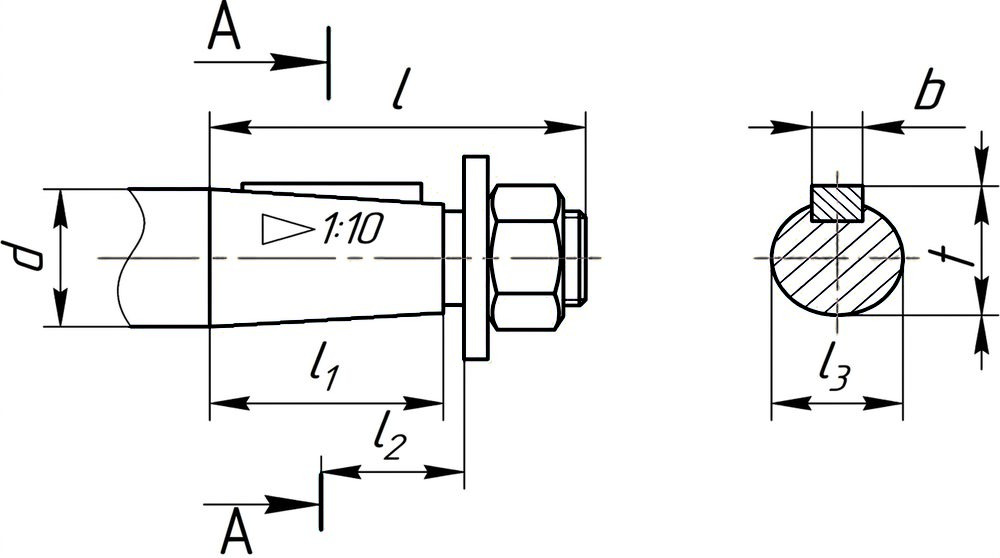
Размеры выходных конических валов редуктора Ц3У 315Н
| Быстроходный вал | Тихоходный вал | ||||||||||||
| d | l | l1 | l2 | l3 | b | t | d | l | l1 | l2 | l3 | b | t |
| 30 | 80 | 58 | 29 | 27,1 | 5 | 29,1 | 110 | 210 | 165 | 82,5 | 101,75 | 25 | 106,75 |
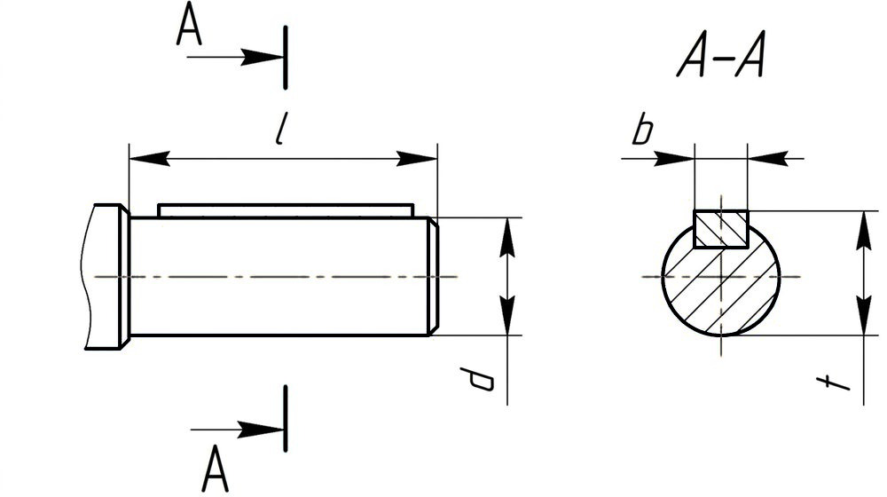
Размеры выходных цилиндрических валов редуктора Ц3У 315Н
| Быстроходный вал | Тихоходный вал | ||||||
| d | l | b | t | d | l | b | t |
| 30k6 | 80 | 8 | 33 | 110m6 | 210 | 28 | 116 |
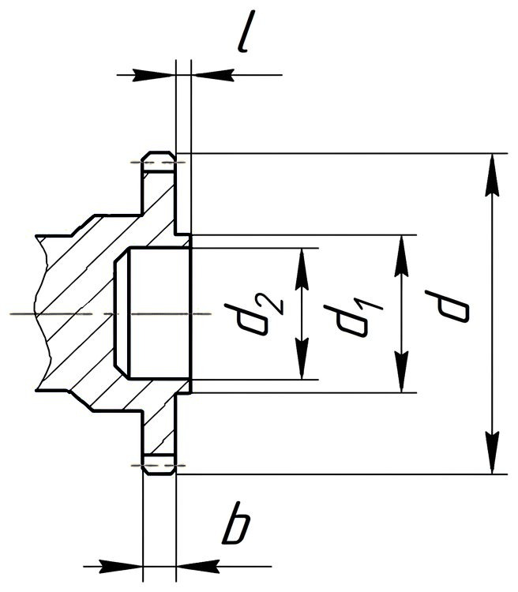
Размеры тихоходного вала редуктора Ц3У 315Н в виде зубчатой полумуфты
| d2 | d1 | d | b | l | Зацепление | |
| m | z | |||||
| 110F8 | 130 | 252 | 30 | 10 | 6 | 40 |
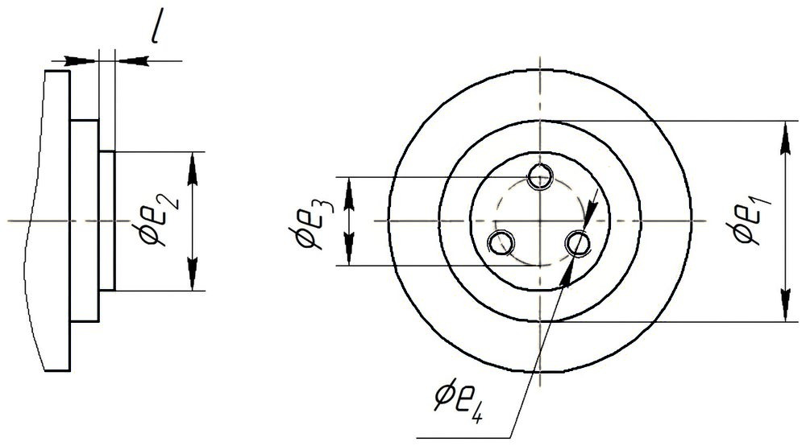
Размеры выходного вала редуктора Ц3У 315Н для подключения командоаппарата
| l | e1 | e2 | e3 | e4 |
| 5 | 110h10 | 75h8 | 55 | M8-7H |
Варианты сборки редуктора 1Ц3У 315Н
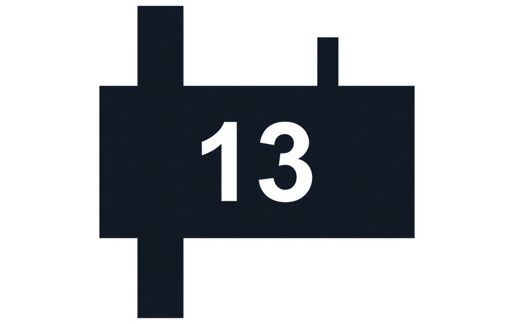 |
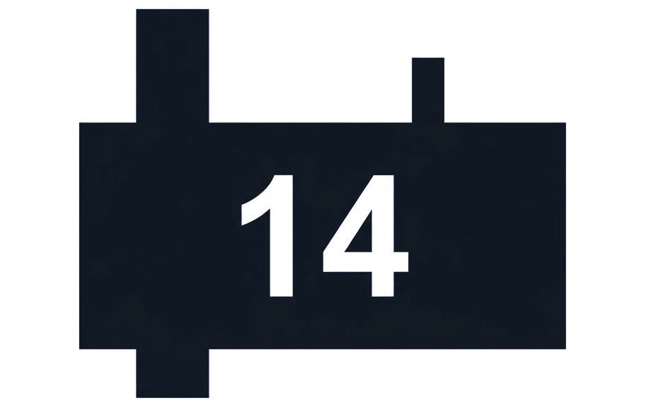 |
|||
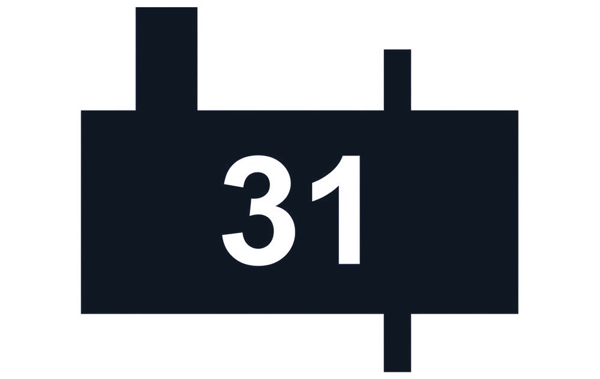 |
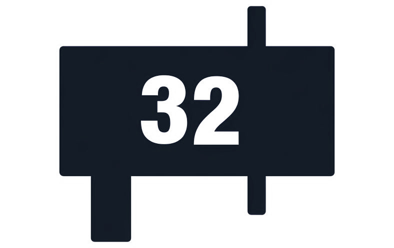 |
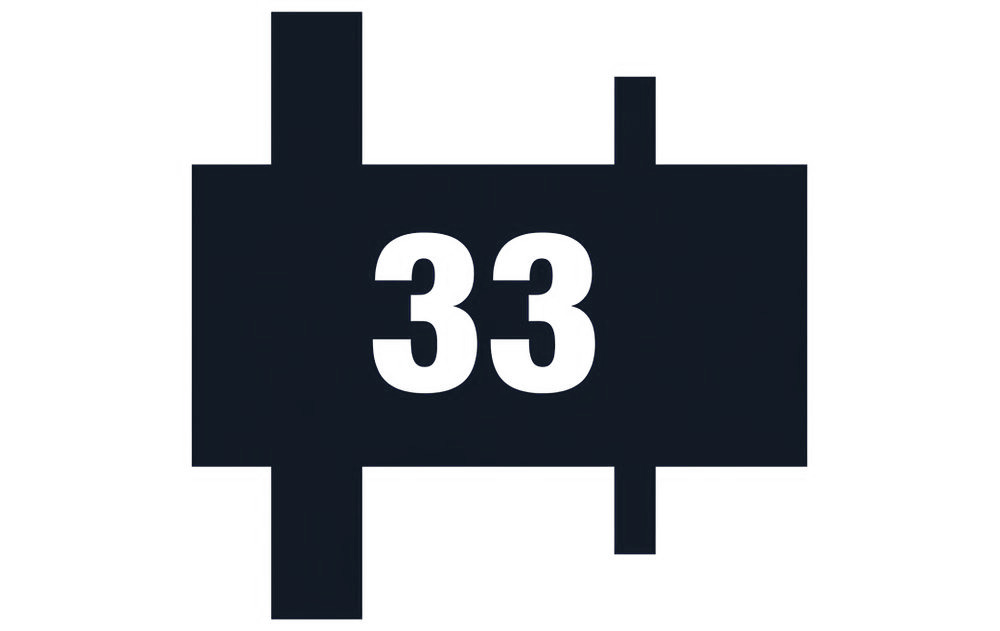 |
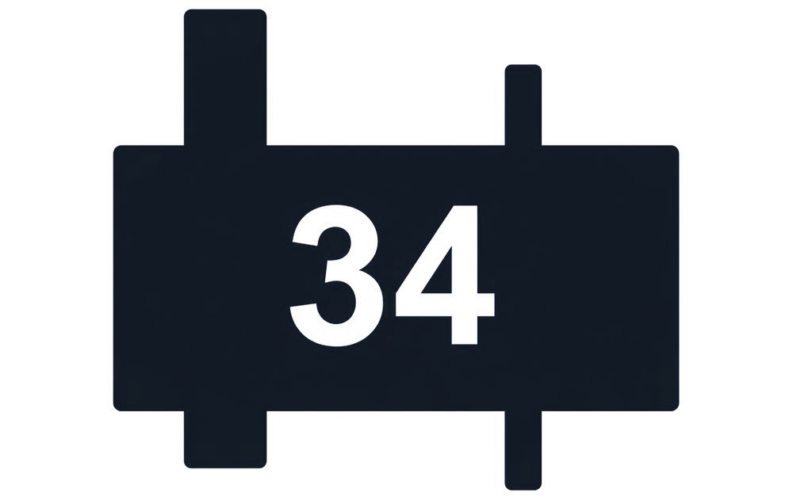 |
Условное обозначение исполнений редукторов типа 1Ц3У 315Н
| Передаточное отношение 31,5 | ||||
| 1Ц3У-315Н-31,5-11 | 1Ц3У-315Н-31,5-12 | 1Ц3У-315Н-31,5-13 | 1Ц3У-315Н-31,5-14 | 1Ц3У-315Н-31,5-15 |
| 1Ц3У-315Н-31,5-21 | 1Ц3У-315Н-31,5-22 | 1Ц3У-315Н-31,5-23 | 1Ц3У-315Н-31,5-24 | 1Ц3У-315Н-31,5-25 |
| 1Ц3У-315Н-31,5-31 | 1Ц3У-315Н-31,5-32 | 1Ц3У-315Н-31,5-33 | 1Ц3У-315Н-31,5-34 | 1Ц3У-315Н-31,5-35 |
| Передаточное отношение 40,0 | ||||
| 1Ц3У-315Н-40-11 | 1Ц3У-315Н-40-12 | 1Ц3У-315Н-40-13 | 1Ц3У-315Н-40-14 | 1Ц3У-315Н-40-15 |
| 1Ц3У-315Н-40-21 | 1Ц3У-315Н-40-22 | 1Ц3У-315Н-40-23 | 1Ц3У-315Н-40-24 | 1Ц3У-315Н-40-25 |
| 1Ц3У-315Н-40-31 | 1Ц3У-315Н-40-32 | 1Ц3У-315Н-40-33 | 1Ц3У-315Н-40-34 | 1Ц3У-315Н-40-35 |
| Передаточное отношение 45,0 | ||||
| 1Ц3У-315Н-45-11 | 1Ц3У-315Н-45-12 | 1Ц3У-315Н-45-13 | 1Ц3У-315Н-45-13 | 1Ц3У-315Н-45-13 |
| 1Ц3У-315Н-45-21 | 1Ц3У-315Н-45-22 | 1Ц3У-315Н-45-23 | 1Ц3У-315Н-45-24 | 1Ц3У-315Н-45-25 |
| 1Ц3У-315Н-45-31 | 1Ц3У-315Н-45-32 | 1Ц3У-315Н-45-33 | 1Ц3У-315Н-45-34 | 1Ц3У-315Н-45-35 |
| Передаточное отношение 50,0 | ||||
| 1Ц3У-315Н-50-11 | 1Ц3У-315Н-50-12 | 1Ц3У-315Н-50-13 | 1Ц3У-315Н-50-14 | 1Ц3У-315Н-50-15 |
| 1Ц3У-315Н-50-21 | 1Ц3У-315Н-50-22 | 1Ц3У-315Н-50-23 | 1Ц3У-315Н-50-24 | 1Ц3У-315Н-50-25 |
| 1Ц3У-315Н-50-31 | 1Ц3У-315Н-50-32 | 1Ц3У-315Н-50-33 | 1Ц3У-315Н-50-34 | 1Ц3У-315Н-50-35 |
| Передаточное отношение 56,0 | ||||
| 1Ц3У-315Н-56-11 | 1Ц3У-315Н-56-12 | 1Ц3У-315Н-56-13 | 1Ц3У-315Н-56-14 | 1Ц3У-315Н-56-15 |
| 1Ц3У-315Н-56-21 | 1Ц3У-315Н-56-22 | 1Ц3У-315Н-56-23 | 1Ц3У-315Н-56-24 | 1Ц3У-315Н-56-25 |
| 1Ц3У-315Н-56-31 | 1Ц3У-315Н-56-32 | 1Ц3У-315Н-56-33 | 1Ц3У-315Н-56-34 | 1Ц3У-315Н-56-35 |
| Передаточное отношение 63,0 | ||||
| 1Ц3У-315Н-63-11 | 1Ц3У-315Н-63-12 | 1Ц3У-315Н-63-13 | 1Ц3У-315Н-63-14 | 1Ц3У-315Н-63-15 |
| 1Ц3У-315Н-63-21 | 1Ц3У-315Н-63-22 | 1Ц3У-315Н-63-23 | 1Ц3У-315Н-63-24 | 1Ц3У-315Н-63-25 |
| 1Ц3У-315Н-63-31 | 1Ц3У-315Н-63-32 | 1Ц3У-315Н-63-33 | 1Ц3У-315Н-63-34 | 1Ц3У-315Н-63-35 |
| Передаточное отношение 80,0 | ||||
| 1Ц3У-315Н-80-11 | 1Ц3У-315Н-80-12 | 1Ц3У-315Н-80-13 | 1Ц3У-315Н-80-14 | 1Ц3У-315Н-80-15 |
| 1Ц3У-315Н-80-21 | 1Ц3У-315Н-80-22 | 1Ц3У-315Н-80-23 | 1Ц3У-315Н-80-24 | 1Ц3У-315Н-80-25 |
| 1Ц3У-315Н-80-31 | 1Ц3У-315Н-80-32 | 1Ц3У-315Н-80-33 | 1Ц3У-315Н-80-34 | 1Ц3У-315Н-80-35 |
| Передаточное отношение 100,0 | ||||
| 1Ц3У-315Н-100-11 | 1Ц3У-315Н-100-12 | 1Ц3У-315Н-100-13 | 1Ц3У-315Н-100-14 | 1Ц3У-315Н-100-15 |
| 1Ц3У-315Н-100-21 | 1Ц3У-315Н-100-22 | 1Ц3У-315Н-100-23 | 1Ц3У-315Н-100-24 | 1Ц3У-315Н-100-25 |
| 1Ц3У-315Н-100-31 | 1Ц3У-315Н-100-32 | 1Ц3У-315Н-100-33 | 1Ц3У-315Н-100-34 | 1Ц3У-315Н-100-35 |
| Передаточное отношение 125,0 | ||||
| 1Ц3У-315Н-125-11 | 1Ц3У-315Н-125-12 | 1Ц3У-315Н-125-13 | 1Ц3У-315Н-125-14 | 1Ц3У-315Н-125-15 |
| 1Ц3У-315Н-125-21 | 1Ц3У-315Н-125-22 | 1Ц3У-315Н-125-23 | 1Ц3У-315Н-125-24 | 1Ц3У-315Н-125-25 |
| 1Ц3У-315Н-125-31 | 1Ц3У-315Н-125-32 | 1Ц3У-315Н-125-33 | 1Ц3У-315Н-125-34 | 1Ц3У-315Н-125-35 |
| Передаточное отношение 160,0 | ||||
| 1Ц3У-315Н-160-11 | 1Ц3У-315Н-160-12 | 1Ц3У-315Н-160-13 | 1Ц3У-315Н-160-14 | 1Ц3У-315Н-160-15 |
| 1Ц3У-315Н-160-21 | 1Ц3У-315Н-160-22 | 1Ц3У-315Н-160-23 | 1Ц3У-315Н-160-24 | 1Ц3У-315Н-160-25 |
| 1Ц3У-315Н-160-31 | 1Ц3У-315Н-160-32 | 1Ц3У-315Н-160-33 | 1Ц3У-315Н-160-34 | 1Ц3У-315Н-160-35 |
| Передаточное отношение 200,0 | ||||
| 1Ц3У-315Н-200-11 | 1Ц3У-315Н-200-12 | 1Ц3У-315Н-200-13 | 1Ц3У-315Н-200-14 | 1Ц3У-315Н-200-15 |
| 1Ц3У-315Н-200-21 | 1Ц3У-315Н-200-22 | 1Ц3У-315Н-200-23 | 1Ц3У-315Н-200-24 | 1Ц3У-315Н-200-25 |
| 1Ц3У-315Н-200-31 | 1Ц3У-315Н-200-32 | 1Ц3У-315Н-200-33 | 1Ц3У-315Н-200-34 | 1Ц3У-315Н-200-35 |
Редуктор 1Ц3У 315Н (Ц3У 315Н) неоднократно модернизировался различными заводами СССР. В связи с чем, детали одинаковых по маркировке редукторов могут
отличаться между собой и не быть взаимозаменяемыми.
Характеристики зубчатых передач редукторов 1Ц3У 315Н отличаются от аналогичных зубчатых передач редукторов Ц3У 315Н по модулю и количеству зубьев при
идентичных передаточных числах.
При размещении заказа в ЗАО "НПО "Механик" без предоставления чертежей деталей, ответственность за несоответствие деталей несет Покупатель.
Узнать цену редуктора 1Ц3У 315Н Вы можете здесь, или по телефону:
(4842) 75-75-05
КМЗ
Калужский механический завод
г. Калуга, ул. Дорожная, д. 40
Пн–Пт 8:00–17:00
Пн–Пт 8:00–17:00
© 2026 ООО «Калужский механический завод»
ИНН 4028052180 · КПП 402801001